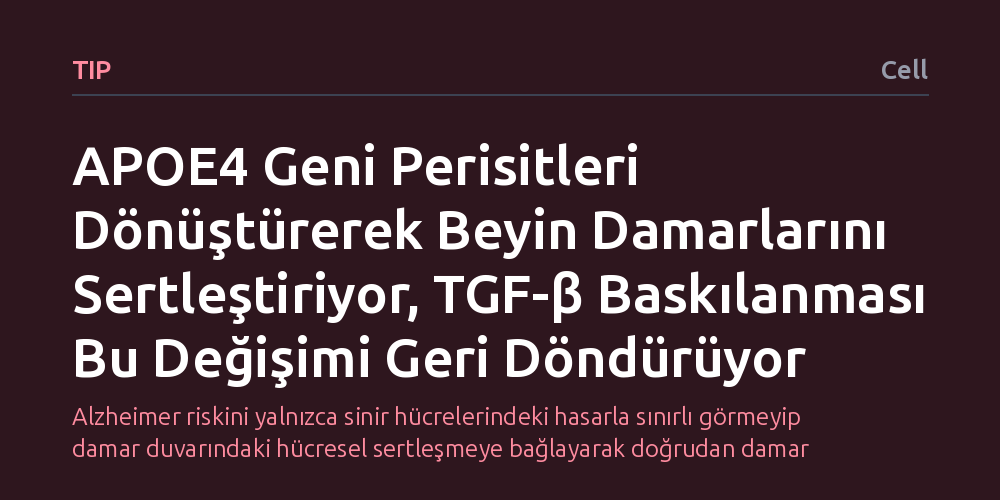

TIP · Cell · 2026-10-07
Alzheimer ile bağlantılı APOE4 geninin beyin damarlarında perisit hücrelerini miyofibroblasta dönüştürerek doku sertleşmesine ve amiloid birikimine yol açtığı saptandı. Araştırma, TGF-β sinyalinin engellenmesinin bu zararlı doku değişimini tersine çevirerek yeni bir tedavi yolu sunabileceğini gösteriyor.
Alzheimer riskini yalnızca sinir hücrelerindeki hasarla sınırlı görmeyip damar duvarındaki hücresel sertleşmeye bağlayarak doğrudan damar yapısını hedefleyen yeni tedavi stratejilerinin önünü açıyor.

Alzheimer araştırmaları uzun yıllar boyunca doğrudan nöronlara ve beyindeki protein yumaklarına odaklandı. Ancak hastalığın gelişiminde beyin kan akışının ve damar sağlığının kritik bir rol oynadığı giderek daha iyi anlaşılıyor. Özellikle en yaygın genetik risk faktörü olan APOE4 varyantını taşıyan bireylerde, damar yapısının neden ve nasıl bozulduğu temel bir bilinmeyen olarak ortada duruyordu.
Bu çalışma, genetik yatkınlığın beyin damarlarındaki mikroskobik mimariyi nasıl doğrudan zedelediğini aydınlatmayı hedefliyor. Damarların işlevini yitirmesi, beynin hem yeterli oksijen ve besin alamamasına hem de zararlı atıkları temizleyememesine yol açıyor. Dolayısıyla sorunun kaynağını hücresel düzeyde tespit etmek, hastalığın erken evrelerine müdahale edebilmek açısından hayati bir önem taşıyor.
Araştırma ekibi, beyin kılcal damarlarının dış yüzeyini sararak damar bütünlüğünü ve kan-beyin bariyerini koruyan perisit hücrelerine odaklandı. APOE4 taşıyıcılarında bu hücrelerin davranışını incelemek amacıyla moleküler biyoloji ve hücresel modelleme teknikleri kullanıldı. Hücrelerin zaman içinde gen ifadesinde ve fiziksel yapısında meydana gelen değişimler hassas biçimde takip edildi.
Deneylerde yalnızca hasarın nasıl geliştiği değil, aynı zamanda müdahale edilip edilemeyeceği de araştırıldı. Bu kapsamda, doku farklılaşmasında ve bağ doku üretiminde kilit rol oynayan TGF-β sinyal yolağı kimyasal olarak baskılandı. Hücrelerin bu müdahaleye verdiği yanıt, damar sertleşmesi belirteçleri ve amiloid birikimi üzerinden adım adım ölçüldü.
Elde edilen bulgular, APOE4 geninin perisit hücrelerinde beklenmedik bir kimlik değişimine yol açtığını gösterdi. Normalde damar duvarını destekleyen perisitler, bu genetik arka planda miyofibroblast adı verilen lif üretici hücrelere dönüşüyor. Bu dönüşüm, beyin damarlarında aşırı bağ dokusu oluşumuna, yani damar sertleşmesine (fibrozis) neden oluyor.
Dahası, bu sertleşmiş damar yapısı amiloid proteinlerinin damar çevresinde birikmesini (perivasküler amiloid birikimi) belirgin şekilde hızlandırıyor. Ancak araştırmanın en dikkat çekici sonucu, bu sürecin tek yönlü bir çıkmaz sokak olmadığını göstermesi oldu. Hücresel sinyal iletiminde rol oynayan TGF-β yolunun engellenmesi, perisitlerin miyofibroblasta dönüşümünü tersine çevirerek patolojik yeniden şekillenmeyi geri döndürdü.
Bu sonuçlar, APOE4 taşıyıcılarında gözlenen serebrovasküler bozulmanın geri çevrilebilir hücresel bir mekanizmaya dayandığını ortaya koyuyor. Bugüne kadar Alzheimer tedavisinde büyük ölçüde nöronlara odaklanılmışken, doğrudan damar sağlığını hedefleyen yaklaşımların güçlü bir alternatif oluşturabileceği anlaşılıyor. TGF-β yolağının baskılanması, yüksek risk grubundaki bireylerde beyin damar dengesini yeniden kurmak için umut verici bir strateji sunuyor.
Yine de bu bulguların laboratuvar ortamındaki hücresel modellerden elde edildiğini ve doğrudan klinik bir başarı anlamına gelmediğini unutmamak gerekiyor. TGF-β proteini insan vücudunda bağışıklık ve yara iyileşmesi gibi pek çok temel işlevi yönettiği için, bu mekanizmayı yan etki yaratmadan insanda güvenle hedefleyecek ilaçların geliştirilmesi daha uzun ve titiz araştırmalar gerektiriyor.